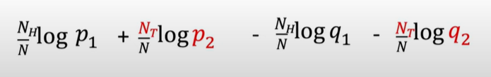
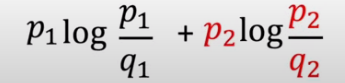

Kullback-Leibler Divergence (KL Divergence) #
Definition: #
- Measures the distance between 2 prabability distributions
Explanation + Proof: #
Base Video: Intuitively Understanding the KL Divergence - YouTube

Sequence of flips: H -> H -> T …..
Multiply the probabilities from both the coins for the corresponding heads and tails. It is nothing but:
-
for True coin: P1 raise to something and P2 raise to something else
-
For coin2: Q1 raise to soemthing and Q2 raise to something else
-
after applying log to the RHS: (** –> Explained at the end)

-
As the number of observations tends towards infinity:
-
Nh/n ~~ p1
-
Nt/N ~~ p2
This leads us to the final log expression:
-

General Fomulae: #

“This computes the distance between 2 distributions motivated by looking at how likely the 2nd distribution would be able to generate samples from the first distribution”
Cross-entropy Loss is very related to KL Divergence
** Why take log of probability ? #
From the probabilities of ratio, why did we suddenly take log of ratio ??
-
The log of probabilities is closely related entropy. In information theory , the entropy of a random variable is the average level of “information”, “surprise”, or “uncertainty” inherent to the variable’s possible outcomes.

KL Divergence is also known as relative entropy between 2 distributions. #